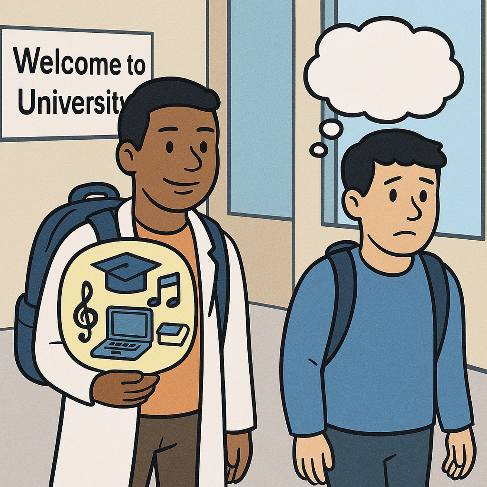
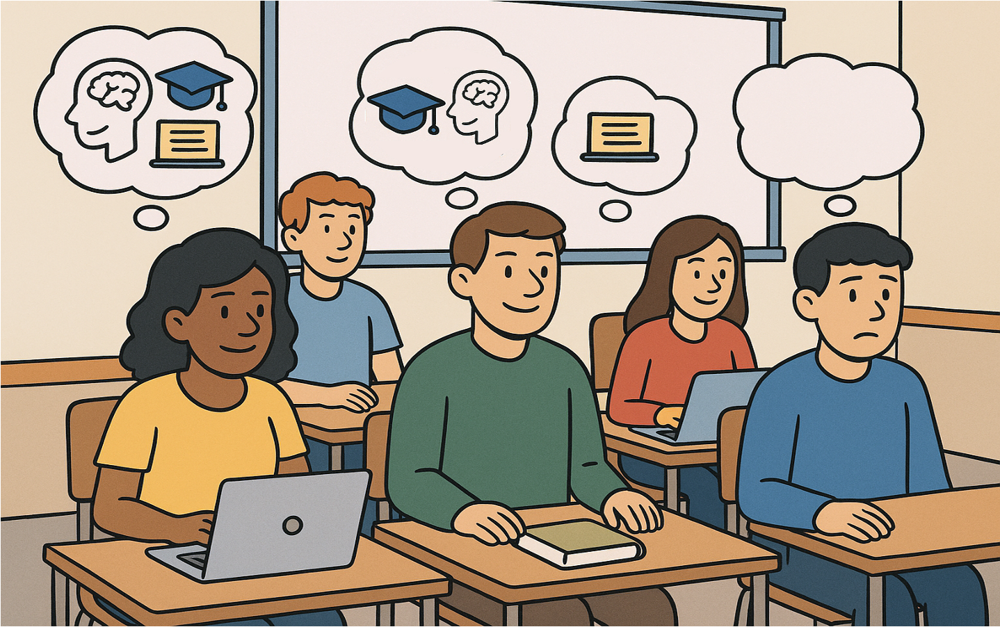

Visual Abstract
 
“Widening participation has opened doors - but not all students arrive equally prepared.” (Rees, 2024)

“Personal tutors can bridge the gap - with empathy, guidance, and connections to support services.” (Tramonte & Willms, 2010)
Introduction - what is Cultural Capital?
Non-financial social assets that promote social mobility beyond economic means (Bourdieu, 1984; Davies and Rizk, 2018)
-
Embodied
Academic language and confidence -
Institutionalised
Institutional reputation and professional accreditation -
Objectified
Technology & Equipment, Luxury goods
There is a clear correlation between educational attainment and a range of factors found in areas of social deprivation. (Smith, 2012)
-
Achievement in context
Comparison of perceived advantage or disadvantage (Gaddis, 2013) -
Background in context
Habitus - indicator of likely outcomes in education (Tramonte and Willms, 2010) -
Cultural Capital in Context
Impact on future student cohorts new to university (Rees, 2024)
Relevance for personal tutors (PTs) and institutions
Identifying at-risk students (Lochtie et al., 2018)
Student characteristics: a history of alcohol &/or substance abuse, disability, mental health issues, part-time, mature, previous offender
Home life: abusive relationships, care leaver, homelessness, pregnant &/or parent, commuter &/or lives with parent
Cultural/economic factors: socioeconomic groups D/E, ethnic minority, asylum seeker, international
- 64% of City's students commute
- 50% of City home student's population come from IMD Q1 & 2 neighbourhoods
Why personal tutors?
- Regular contact enables PTs to build trust and provide personalised guidance.
- Holistic perspective helps PTs identify and support both academic and personal challenges.
- Trust and approachability encourage students to seek help when needed (Fukuyama, 1995; Putnam, 2000).
- Institutional knowledge equips PTs to signpost students to appropriate support services.
- Skill development support includes study strategies, time management, and professional growth (Dweck et al., 2014; Farrington et al., 2012; Luthar et al., 2015).
Dos and don'ts for personal tutors (metacognition)
Safeguarding and Boundaries
| Do... | Don't... |
|---|---|
| Recognise and signpost support facilities (HEA, 2013) | Act as a therapist - signpost to appropriate services |
| Exercise active listening - empathetic and non-judgmental | Ignore warning signs - follow safeguarding procedures |
| Offer stress-management guidance and tools | Neglect your own health - focus conversations appropriately |
Inclusivity and EDI
| Do… | Don't… |
|---|---|
| Foster inclusivity - build a safe zone for autonomy | Apply judgment biases |
| Recognise and employ EDI - value and integrate diverse knowledge | Treat students as stereotypes based on their background |
Development and Engagement
| Do… | Don't… |
|---|---|
| Discuss roles of personal tutors and personal tutees | Assume students understand the purpose of personal tutoring or their responsibilities within it |
| Support goal setting | Rush decisions - follow proper processes |
| Encourage active engagement | Delay meetings - respond swiftly and adjust as needed |
Acknowledgements
Our thanks to Dr Luis Pereira and Dr Joanna Rawles for their feedback on drafts of this poster. This poster was first created as part of the EDM118 'Supporting Your Students' module at City St George's, University of London.